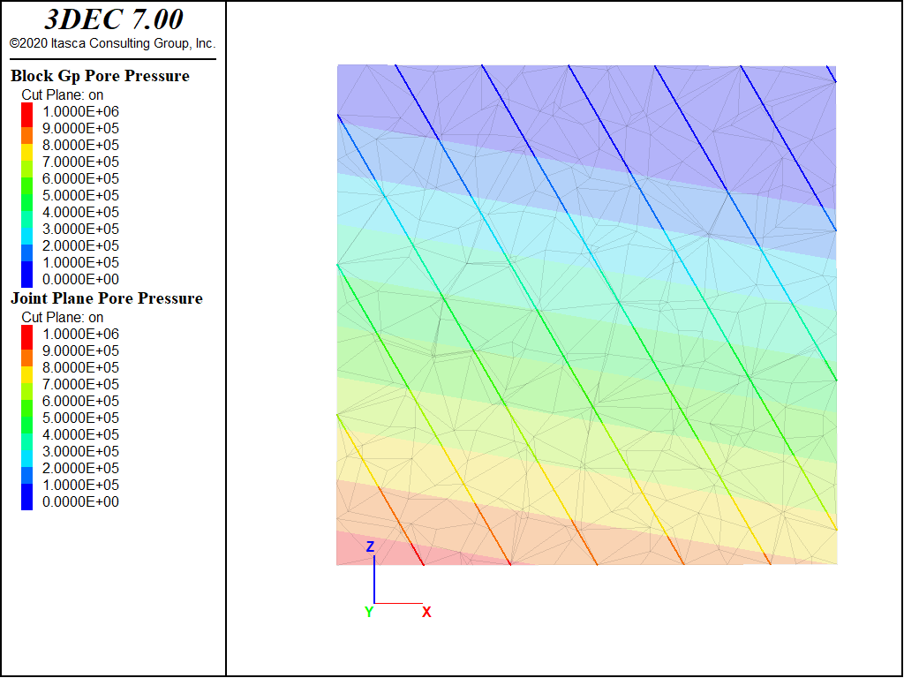

指定初始孔隙压力
孔隙压力可采用与应力相同的方式初始化，即使用 block insitu 命令。赋予孔隙压力时，只需使用 pore-pressure 关键字。通常还会通过 梯度（gradient） 关键字提供梯度。与应力初始化相同，指定值为原点 (0,0,0) 处的孔隙压力，梯度为 \(x\)、\(y\) 和 \(z\) 方向单位长度的孔隙压力变化。下面代码给出一个示例：
block insitu pore-pressure 1e6 gradient 0 0 9810
注意，3DEC 假设材料始终饱和，不考虑非完全饱和流动。地下水位以上的孔隙压力为 0。还要注意，孔隙压力实际上赋予网格点，网格单元孔隙压力为其四个网格点孔隙压力的平均值。网格单元孔隙压力用于计算有效应力，再以有效应力判断网格单元是否破坏。
同一命令也会为节理接触赋予孔隙压力。节理上的有效法向应力用于判断接触破坏。
也可以使用 block water 命令指定孔隙压力。如果给出流体密度和重力，就会根据地下水位位置自动计算孔隙压力。地下水位可定义为平面或几何曲面（例如 dxf）。下面给出简单示例。
model new
model random 10000
block create brick 0,100 0,100 0,100
block cut joint-set dip 60 dip-direction 90 spacing 15
block zone generate edgelength 10
model gravity 0 0 -9.81
block water density 1000
; 倾斜 10 度的地下水位面
block water plane normal 0.17,0,0.98 origin 50,50,90


图 1：由 BLOCK WATER 命令计算的网格单元（半透明）及节理孔隙压力。
有关赋予孔隙压力及其对模型影响的更多详情，请参阅孔隙压力与有效应力（Pore Pressure and Effective Stress）。
本讨论假定模型未以 model configure fluid on 运行，且不进行流动计算。有关流动计算中指定初始孔隙压力的更多信息，请参阅《理论与背景》中的《流体（Fluid）》手册。
| 这些内容对您有帮助吗？… | FLAC3D © 2019, Itasca | 原文更新于 2020 年 10 月 8 日 |